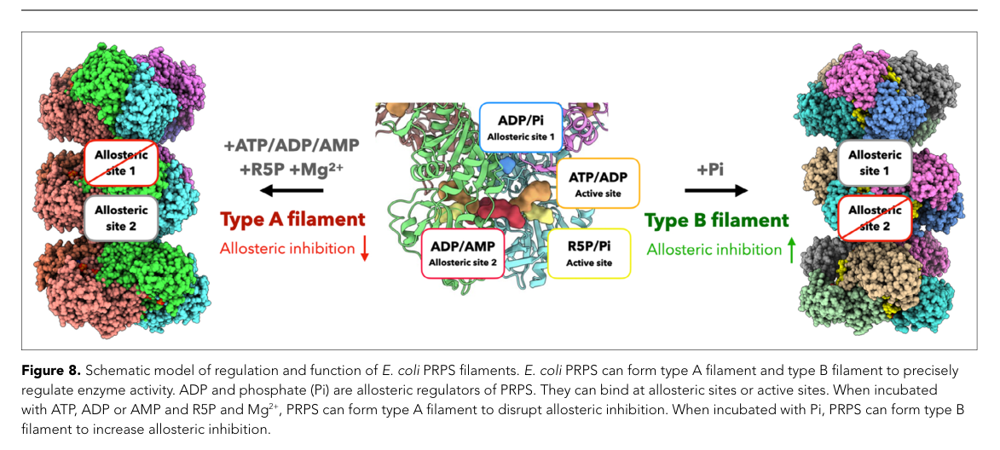

prs (PP_0722) encodes ribose-phosphate pyrophosphokinase (PRPP synthase; EC 2.7.6.1), a class I bacterial enzyme that catalyzes the Mg2+-dependent, essentially irreversible transfer of the diphosphoryl group from ATP to ribose-5-phosphate to produce 5-phospho-alpha-D-ribose 1-diphosphate (PRPP) plus AMP. PRPP is a central "activated ribose" branch-point metabolite that supplies ribose-phosphate to purine and pyrimidine nucleotide biosynthesis and salvage, NAD/NADP cofactor biosynthesis, and (in many bacteria) histidine and tryptophan biosynthesis. The enzyme is a cytosolic homohexamer subject to phosphate activation and feedback inhibition by adenine/guanine nucleotides. No KT2440-specific primary characterization of PP_0722 was located; functional annotation is supported at the family/EC level by UniProt and the bacterial PRPP synthase literature.
| GO Term | Evidence | Action | Reason |
|---|---|---|---|
|
GO:0000287
magnesium ion binding
|
IEA
GO_REF:0000120 |
KEEP AS NON CORE |
Summary: Magnesium binding is a required catalytic cofactor feature. Class I bacterial PRPP synthases require divalent cations including Mg2+, consistent with UniProt's annotation of two Mg(2+) ions per subunit.
Reason: Mg2+ binding is essential for catalysis but is a cofactor feature rather than the specific molecular function; the deep research literature confirms class I PRPP synthases require Mg2+ (in addition to MgATP) for activity.
Supporting Evidence:
file:PSEPK/prs/prs-uniprot.txt
Binds 2 Mg(2+) ions per subunit
file:PSEPK/prs/prs-goa.tsv
GO:0000287 magnesium ion binding
file:PSEPK/prs/prs-deep-research-falcon.md
class I enzymes require divalent cations, including
|
|
GO:0002189
ribose phosphate diphosphokinase complex
|
IEA
GO_REF:0000118 |
KEEP AS NON CORE |
Summary: PRPP synthase assembles into a multimeric complex (UniProt reports a homohexamer). The cellular component annotation is plausible but less informative than the enzyme activity term.
Reason: The defining function is best captured by ribose phosphate diphosphokinase activity and PRPP biosynthesis; the homo-oligomeric assembly is supporting context. UniProt reports the subunit as a homohexamer.
Supporting Evidence:
file:PSEPK/prs/prs-goa.tsv
GO:0002189 ribose phosphate diphosphokinase complex
file:PSEPK/prs/prs-uniprot.txt
SUBUNIT: Homohexamer
|
|
GO:0004749
ribose phosphate diphosphokinase activity
|
IEA
GO_REF:0000120 |
ACCEPT |
Summary: Ribose phosphate diphosphokinase activity (EC 2.7.6.1) is the exact core molecular function. The enzyme transfers the pyrophosphoryl/diphosphoryl group from ATP to ribose-5-phosphate, producing PRPP and AMP.
Reason: UniProt assigns EC 2.7.6.1 and the Rhea reaction (RHEA:15609), and the deep research literature confirms the canonical PRPP synthase reaction (ribose-5-phosphate + ATP -> PRPP + AMP) for the ribose-phosphate pyrophosphokinase family.
Supporting Evidence:
file:PSEPK/prs/prs-uniprot.txt
transfer of pyrophosphoryl group from ATP to 1-hydroxyl
file:PSEPK/prs/prs-goa.tsv
GO:0004749 ribose phosphate diphosphokinase activity
file:PSEPK/prs/prs-deep-research-falcon.md
catalyzes the formation of PRPP from ribose-5-phosphate and ATP, producing AMP
file:PSEPK/prs/prs-deep-research-falcon.md
irreversible diphosphoryl transfer from ATP to ribose-5-phosphate
|
|
GO:0005737
cytoplasm
|
IEA
GO_REF:0000120 |
KEEP AS NON CORE |
Summary: Cytoplasm is the expected localization for this soluble central-metabolism enzyme. The deep research literature treats bacterial PRPP synthase as a soluble cytosolic enzyme acting on central metabolites.
Reason: Localization is useful context but not the defining function. KT2440-specific localization was not directly measured; cytosolic localization is the most consistent inference and matches the UniProt subcellular location.
Supporting Evidence:
file:PSEPK/prs/prs-uniprot.txt
SUBCELLULAR LOCATION: Cytoplasm
file:PSEPK/prs/prs-goa.tsv
GO:0005737 cytoplasm
file:PSEPK/prs/prs-deep-research-falcon.md
soluble cytosolic enzyme
|
|
GO:0006015
5-phosphoribose 1-diphosphate biosynthetic process
|
IEA
GO_REF:0000120 |
ACCEPT |
Summary: 5-phosphoribose 1-diphosphate (PRPP) biosynthesis is the direct biological process for Prs, which performs the single-step PRPP biosynthesis route from ribose-5-phosphate (UniPathway UPA00087/UER00172).
Reason: UniProt places Prs in the one-step PRPP biosynthesis route from ribose-5-phosphate, and the deep research literature describes the PRPP-synthesizing reaction (R5P -> PRPP) as the enzyme's direct role.
Supporting Evidence:
file:PSEPK/prs/prs-uniprot.txt
5-phospho-alpha-D-ribose 1-diphosphate from
file:PSEPK/prs/prs-goa.tsv
GO:0006015 5-phosphoribose 1-diphosphate biosynthetic process
file:PSEPK/prs/prs-deep-research-falcon.md
diphosphoryl transfer from ATP to ribose-5-phosphate (R5P) to produce
|
|
GO:0006164
purine nucleotide biosynthetic process
|
IEA
GO_REF:0000118 |
KEEP AS NON CORE |
Summary: Purine nucleotide biosynthesis is a downstream use of the PRPP that Prs produces, rather than Prs's direct reaction. PRPP is a central branch-point metabolite required for purine and pyrimidine nucleotide biosynthesis and salvage.
Reason: PRPP supplies purine biosynthesis, so the involvement is real, but the specific direct process (PRPP biosynthesis, GO:0006015) is the core BP. The deep research confirms PRPP is required for purine and pyrimidine nucleotide biosynthesis.
Supporting Evidence:
file:PSEPK/prs/prs-goa.tsv
GO:0006164 purine nucleotide biosynthetic process
file:PSEPK/prs/prs-deep-research-falcon.md
Purine and pyrimidine nucleotide biosynthesis
|
|
GO:0009156
ribonucleoside monophosphate biosynthetic process
|
IEA
GO_REF:0000002 |
MARK AS OVER ANNOTATED |
Summary: Ribonucleoside monophosphate biosynthesis is broader and downstream of Prs's direct PRPP synthesis; Prs only supplies the PRPP precursor.
Reason: GO:0006015 (PRPP biosynthesis) is the more specific direct biological process. The deep research describes PRPP as a precursor metabolite for nucleotide biosynthesis rather than Prs directly performing nucleoside monophosphate synthesis.
Supporting Evidence:
file:PSEPK/prs/prs-goa.tsv
GO:0009156 ribonucleoside monophosphate biosynthetic process
file:PSEPK/prs/prs-deep-research-falcon.md
supplies ribose-phosphate to multiple biosynthetic pathways
|
|
GO:0009165
nucleotide biosynthetic process
|
IEA
GO_REF:0000002 |
MARK AS OVER ANNOTATED |
Summary: Nucleotide biosynthetic process is too broad for Prs, which directly synthesizes the PRPP precursor rather than nucleotides themselves.
Reason: Prs directly synthesizes PRPP, a precursor for nucleotide biosynthesis; GO:0006015 is the specific process. The deep research frames PRPP as a central activated-ribose donor feeding nucleotide pathways.
Supporting Evidence:
file:PSEPK/prs/prs-goa.tsv
GO:0009165 nucleotide biosynthetic process
file:PSEPK/prs/prs-deep-research-falcon.md
central activated ribose donor
|
Q: How is KT2440 Prs allosterically regulated by phosphate activation and nucleotide pools (AMP/ADP/GDP) during carbon-source shifts?
Q: Does P. putida KT2440 Prs assemble into filamentous cytoophidia, and if so does filamentation modulate its sensitivity to allosteric inhibition as shown for other bacterial PRPP synthases?
Experiment: Measure Prs kinetics, phosphate activation, and nucleotide (AMP/ADP/GDP) inhibition with purified KT2440 enzyme, coupled to intracellular PRPP/nucleotide profiling in prs perturbation strains.
Type: enzyme regulation and metabolomics assay
Experiment: Test for native filamentation/cytoophidia formation of KT2440 Prs by fluorescence microscopy of tagged Prs and cryo-EM of purified enzyme under different ligand (ATP/ADP/Pi) conditions.
Type: structural and cell biology assay
The research report should be a detailed narrative explaining the function, biological processes, and localization of the gene product. Citations should be given for all claims.
You should prioritize authoritative reviews and primary scientific literature when conducting research. You can supplement
this with annotations you find in gene/protein databases, but these can be outdated or inaccurate.
We are specifically interested in the primary function of the gene - for enzymes, what reaction is catalyzed, and what is the substrate specificity? For transporters, what is the substrate? For structural proteins or adapters, what is the broader structural role? For signaling molecules, what is the role in the pathway.
We are interested in where in or outside the cell the gene product carries out its function.
We are also interested in the signaling or biochemical pathways in which the gene functions. We are less interested in broad pleiotropic effects, except where these elucidate the precise role.
Include evidence where possible. We are interested in both experimental evidence as well as inference from structure, evolution, or bioinformatic analysis. Precise studies should be prioritized over high-throughput, where available.
The prs gene product in bacteria is phosphoribosyl pyrophosphate (PRPP) synthase (ribose-phosphate pyrophosphokinase; EC 2.7.6.1), which catalyzes the formation of PRPP from ribose-5-phosphate and ATP, producing AMP; PRPP is a central “activated ribose” donor that supplies ribose-phosphate to multiple biosynthetic pathways, including purine/pyrimidine nucleotides, NAD/NADP cofactors, and (in many bacteria) histidine and tryptophan pathways. (ugbogu2022contributionofmodel pages 1-2, laux2024livinginmangroves pages 14-16)
Critical limitation for gene-specific annotation: using the available tool-based literature retrieval, I did not recover any primary article that explicitly mentions P. putida KT2440 locus PP_0722 or UniProt Q88PX6. Therefore, KT2440-specific claims (e.g., essentiality, regulation strength, kinetic constants, expression patterns, or subcellular localization measurements) cannot be supported here; the report instead provides (i) high-confidence family/EC-level functional annotation consistent with UniProt’s curated identity and (ii) organism-general mechanistic insights from authoritative sources. (ugbogu2022contributionofmodel pages 1-2, karst2021biosynthesisandutilisation pages 26-29, hu2022filamentationmodulatesallosteric pages 1-2)
Bacterial Prs/PRPP synthase (EC 2.7.6.1) catalyzes an essentially irreversible diphosphoryl transfer from ATP to ribose-5-phosphate (R5P) to produce 5-phospho-D-ribosyl-α-1-diphosphate (PRPP) and AMP. (ugbogu2022contributionofmodel pages 1-2, hu2022filamentationmodulatesallosteric pages 1-2)
Reaction (canonical):
- Substrates: ribose-5-phosphate + ATP
- Products: PRPP + AMP
This reaction is commonly described as “transfer of diphosphate from ATP to ribose-5-phosphate,” emphasizing that PRPP is the “activated” ribose donor that enables ribose-phosphate incorporation in downstream pathways. (hu2022filamentationmodulatesallosteric pages 1-2)
PRPP is broadly required for:
- Purine and pyrimidine nucleotide biosynthesis and salvage pathways (central precursor supply). (ugbogu2022contributionofmodel pages 1-2, hu2022filamentationmodulatesallosteric pages 1-2)
- NAD and NADP cofactor biosynthesis. (laux2024livinginmangroves pages 14-16, ugbogu2022contributionofmodel pages 1-2)
- In bacteria including E. coli, histidine and tryptophan biosynthesis, reflecting PRPP’s role as a ribose donor in these amino-acid pathways. (ugbogu2022contributionofmodel pages 1-2, laux2024livinginmangroves pages 14-16)
A 2024 metagenomic metabolic reconstruction similarly emphasized the PRPP-synthesizing reaction (R5P → PRPP) and linked PRPP to biosynthesis of histidine/tryptophan, NAD/NADP, and purine/pyrimidine nucleotides. (laux2024livinginmangroves pages 14-16)
A biochemical synthesis/utilization summary of bacterial PRPP synthase (referred to as ribose-phosphate diphosphokinase/RPPK) notes that class I enzymes require divalent cations, including Mg2+ (in addition to MgATP) and a second metal (e.g., Mn2+) coordinated during catalysis. (karst2021biosynthesisandutilisation pages 26-29)
Many bacterial class I PRPP synthases are also phosphate (Pi)-activated, with Pi acting as an activator that is intertwined with allosteric regulation. (hu2022filamentationmodulatesallosteric pages 1-2)
A 2022 review summarizes that PRPP synthase activity is subject to feedback inhibition by adenine/guanine nucleotides, listing AMP, ADP, and GDP as inhibitors. (ugbogu2022contributionofmodel pages 1-2)
A high-impact mechanistic study further states that class I PRPP synthases are allosterically inhibited by ADP, and that ADP can compete with phosphate and ATP at regulatory/active sites (described at the level of bacterial class I enzymes). (hu2022filamentationmodulatesallosteric pages 1-2)
The retrieved evidence does not provide a KT2440-specific localization experiment for Prs. However, all biochemical/structural evidence discussed treats bacterial PRPP synthase as a soluble cytosolic enzyme acting on central metabolites (R5P, ATP) and forming regulated enzyme assemblies in the cytosol in some organisms. (hu2022filamentationmodulatesallosteric pages 1-2)
Accordingly, for Q88PX6 a cytosolic localization is the most consistent functional inference, but it should be considered inferred rather than directly measured in P. putida KT2440 in the present evidence set.
A 2024 metabolic reconstruction from metagenome-assembled genomes explicitly describes ribose-phosphate pyrophosphokinase (EC 2.7.6.1) as converting ribose-5-phosphate to PRPP and emphasizes PRPP’s ubiquity as a precursor for nucleotides, NAD/NADP, and histidine/tryptophan. (laux2024livinginmangroves pages 14-16)
Although not specific to P. putida KT2440, this 2024 work reflects current practice: PRPP synthase is routinely annotated as a key node in integrated network reconstructions and flux interpretations of microbial communities. (laux2024livinginmangroves pages 14-16)
A major mechanistic advance (cryo-EM and biochemistry) showed that bacterial PRPP synthase can form filamentous assemblies (cytoophidia) both in vitro and in vivo, and that distinct filament types form depending on bound ligands; critically, one filament type can be resistant to allosteric inhibition, indicating that supramolecular assembly itself is a regulatory layer for PRPP metabolism. (hu2022filamentationmodulatesallosteric pages 1-2)
The retrieved figure panels provide a concise regulatory model where ligand binding (adenine nucleotides vs Pi) drives different filament forms and alters inhibition sensitivity. (hu2022filamentationmodulatesallosteric media 8218b197, hu2022filamentationmodulatesallosteric media 64c0e530, hu2022filamentationmodulatesallosteric media f4004a8f)
Interpretation for P. putida KT2440 Q88PX6: filamentation has not been shown for the KT2440 enzyme in the retrieved evidence. Nevertheless, since the mechanism is demonstrated in bacteria and linked to class I PRPP synthase regulation, it is a plausible regulatory strategy in other bacterial Prs enzymes and a concrete hypothesis for P. putida that can be tested experimentally (native microscopy, crosslinking, cryo-EM, or mutational disruption of filament interfaces). (hu2022filamentationmodulatesallosteric pages 1-2)
Because PRPP is costly and unstable to procure as a reagent, enzyme-cascade approaches are used to generate PRPP in situ for engineered pathways. A detailed biochemical summary (focused on PRPP biosynthesis/utilization and cofactor regeneration) describes cloning/using ribose-phosphate pyrophosphokinase (EC 2.7.6.1) as a PRPP supply module and places it in the context of engineered PRPP-dependent systems. (karst2021biosynthesisandutilisation pages 26-29)
This illustrates an application-relevant theme: Prs is a leverage point for tuning PRPP availability to support PRPP-consuming enzymes (phosphoribosyltransferases) in cell-free biocatalysis, synthetic biology, and metabolic engineering.
A broad review on PRPP metabolism and model-organism work emphasizes that PRPP synthase is “rate-limiting” for PRPP formation and that PRPP availability determines flux into nucleotide/cofactor biosynthesis and related cellular processes; such expert synthesis motivates why PRPP synthase is frequently targeted for metabolic rewiring and why dysregulation has strong phenotypic consequences. (ugbogu2022contributionofmodel pages 1-2)
An authoritative 2022 review argues that PRPP synthesis is essential for free-living organisms and that bacteria must encode at least one functional PRPP synthase for survival, consistent with historical genetic evidence where prs defects produce multiple auxotrophies tied to nucleotide and amino-acid precursor shortages. (ugbogu2022contributionofmodel pages 1-2, ugbogu2022contributionofmodel pages 28-30)
Caveat for P. putida KT2440: while essentiality is plausible for KT2440, the present evidence set does not include a KT2440 transposon essentiality map or deletion study for PP_0722/Q88PX6.
The mechanistic study of bacterial PRPP synthase filamentation provides expert-level evidence that PRPP supply can be regulated not only by classic allosteric ligands (Pi, ADP/AMP-like effectors) but also by assembly into higher-order structures that change inhibitor susceptibility. (hu2022filamentationmodulatesallosteric pages 1-2)
This model aligns with a broader trend in metabolic regulation: enzyme self-assembly can serve as a rapid, reversible switch integrating metabolite signals and protein-protein interactions.
Quantitative/statistical limitation: within the retrieved evidence corpus, there were few KT2440-specific quantitative datasets (e.g., kinetic constants, expression fold-changes, fitness coefficients) for prs/PP_0722/Q88PX6.
The strongest data-driven claim available here is qualitative-but-mechanistic: bacterial PRPP synthase filament types differ in resistance to allosteric inhibition, supported by biochemical assays and structural models in the mechanistic study, and visually summarized in the retrieved figures. (hu2022filamentationmodulatesallosteric pages 1-2, hu2022filamentationmodulatesallosteric media 8218b197, hu2022filamentationmodulatesallosteric media 64c0e530, hu2022filamentationmodulatesallosteric media f4004a8f)
| Claim/Annotation element | Evidence summary | Source (first author, year) | URL | Notes/Limitations |
|---|---|---|---|---|
| Verified target family/function for Q88PX6 | UniProt-provided identity for Q88PX6 in Pseudomonas putida KT2440 is ribose-phosphate pyrophosphokinase / PRPP synthase (Prs), EC 2.7.6.1, in the ribose-phosphate pyrophosphokinase family; retrieved literature on bacterial PRPP synthase is consistent with this family-level annotation, but retrieved texts did not contain a KT2440-specific primary characterization of PP_0722. (ugbogu2022contributionofmodel pages 28-30) | Ugbogu, 2022 | https://doi.org/10.3390/cells11121909 | Identity match is strong at family/EC level, but direct strain-specific experimental evidence for Q88PX6/PP_0722 was not retrieved. |
| Catalytic reaction | PRPP synthase catalyzes the essentially irreversible transfer of diphosphate from ATP to ribose-5-phosphate, producing 5-phospho-D-ribosyl-α-1-diphosphate (PRPP) and AMP. (ugbogu2022contributionofmodel pages 1-2, karst2021biosynthesisandutilisation pages 26-29, hu2022filamentationmodulatesallosteric pages 1-2, laux2024livinginmangroves pages 14-16) | Ugbogu, 2022 | https://doi.org/10.3390/cells11121909 | Reaction is well supported across reviews and biochemical summaries, but not directly measured for P. putida KT2440 in retrieved texts. |
| Substrates and products | Canonical substrates are ribose-5-phosphate + ATP; products are PRPP + AMP. Structural/biochemical summaries support R5P and an NTP donor (usually ATP) as the canonical reactants. (ugbogu2022contributionofmodel pages 1-2, ugbogu2022contributionofmodel pages 32-34, karst2021biosynthesisandutilisation pages 26-29, hu2022filamentationmodulatesallosteric pages 1-2) | Karst, 2021 | https://doi.org/10.6094/unifr/234252 | Some PRPP synthase classes outside the typical bacterial class I enzyme can vary in donor specificity; annotation for Q88PX6 is most consistent with a class I bacterial enzyme. |
| Cofactor requirements | Class I bacterial PRPP synthases require divalent cations; summaries specifically note Mg2+ (in excess beyond MgATP) and a second metal such as Mn2+ coordinated during catalysis. (karst2021biosynthesisandutilisation pages 26-29) | Karst, 2021 | https://doi.org/10.6094/unifr/234252 | Metal requirements are drawn from bacterial class I enzymes generally; no KT2440-specific metal-dependence experiment was retrieved. |
| Core pathway role: nucleotide precursor supply | PRPP is a central branch-point metabolite required for purine and pyrimidine nucleotide biosynthesis and salvage metabolism; therefore Prs supports cellular nucleotide pool homeostasis. (ugbogu2022contributionofmodel pages 1-2, hu2022filamentationmodulatesallosteric pages 1-2, laux2024livinginmangroves pages 14-16) | Ugbogu, 2022 | https://doi.org/10.3390/cells11121909 | Strong consensus function across organisms; directly relevant to annotating Q88PX6 as a central metabolic enzyme. |
| Additional pathway roles: NAD/NADP and amino acids | PRPP is also required for biosynthesis of NAD+/NADP+ and, in bacteria including E. coli, for histidine and tryptophan biosynthesis; metagenomic reconstruction likewise describes PRPP as precursor for histidine, tryptophan, NAD and NADP. (ugbogu2022contributionofmodel pages 1-2, laux2024livinginmangroves pages 14-16) | Laux, 2024 | https://doi.org/10.1186/s12866-024-03390-6 | Role is inferred for bacterial Prs broadly; direct flux or knockout evidence for PP_0722 in KT2440 was not found. |
| Essentiality/physiological importance | Reviews summarize that PRPP synthesis is essential for free-living organisms and that bacteria require at least one functional PRS for survival; classic E. coli genetics support central physiological importance with multiple auxotrophies upon prs defects. (ugbogu2022contributionofmodel pages 1-2, ugbogu2022contributionofmodel pages 28-30) | Ugbogu, 2022 | https://doi.org/10.3390/cells11121909 | This supports likely essentiality or near-essentiality of Q88PX6, but no KT2440 transposon or deletion study was retrieved. |
| Regulation by phosphate | Class I PRPP synthase is phosphate-activated; phosphate is required for full activity in many bacterial enzymes. (karst2021biosynthesisandutilisation pages 26-29, hu2022filamentationmodulatesallosteric pages 1-2) | Hu, 2022 | https://doi.org/10.7554/elife.79552 | Regulation is described for class I PRPS generally, not specifically measured in P. putida KT2440. |
| Inhibition by adenine/guanine nucleotides | PRS activity is regulated by feedback inhibition from adenine/guanine nucleotide products; summaries cite AMP, ADP, and GDP as inhibitors, and class I PRPS is described as allosterically inhibited by ADP. (ugbogu2022contributionofmodel pages 1-2, karst2021biosynthesisandutilisation pages 26-29, hu2022filamentationmodulatesallosteric pages 1-2) | Ugbogu, 2022 | https://doi.org/10.3390/cells11121909 | Inhibitor spectrum can vary by species/enzyme class; retrieved evidence is family-level rather than KT2440-specific. |
| Mechanistic/regulatory detail for ADP inhibition | In bacterial class I PRPS, ADP can compete with phosphate and ATP at regulatory/active sites; a regulatory flexible loop influences inhibitor and ATP binding. (hu2022filamentationmodulatesallosteric pages 1-2) | Hu, 2022 | https://doi.org/10.7554/elife.79552 | Mechanistic insight comes from E. coli PRPS cryo-EM, not from P. putida enzyme structures. |
| Filamentation/cytoophidia | PRPS can assemble into filamentous cytoophidia in prokaryotes and eukaryotes; two ligand-dependent filament types were resolved for bacterial PRPS. (hu2022filamentationmodulatesallosteric pages 1-2, ugbogu2022contributionofmodel pages 32-34) | Hu, 2022 | https://doi.org/10.7554/elife.79552 | Filamentation has not been shown for Q88PX6 in KT2440 in retrieved sources, so this should be treated as informed comparative biology rather than direct annotation. |
| Filamentation and inhibition resistance | One bacterial PRPS filament type was reported to be resistant to allosteric inhibition, indicating supramolecular assembly can modulate enzyme regulation. (hu2022filamentationmodulatesallosteric pages 1-2) | Hu, 2022 | https://doi.org/10.7554/elife.79552 | Important recent mechanistic insight, but no evidence yet ties this property specifically to P. putida Prs. |
| Application relevance | PRPP synthase is used in cell-free/artificial-cell and cofactor-regeneration systems to generate PRPP from ribose-derived intermediates, reflecting its practical value in engineered nucleotide/cofactor biosynthesis. (karst2021biosynthesisandutilisation pages 26-29) | Karst, 2021 | https://doi.org/10.6094/unifr/234252 | Application evidence is generic and not specific to Q88PX6 or KT2440. |
| Annotation confidence and main limitation | Best-supported annotation for Q88PX6 is cytosolic bacterial PRPP synthase/Prs, supplying PRPP for nucleotide, NAD/NADP, histidine, and tryptophan metabolism, with class I-like phosphate activation and nucleotide inhibition expected. However, retrieved texts lacked KT2440-specific primary evidence on PP_0722 localization, kinetics, regulation, or mutant phenotype. (laux2024livinginmangroves pages 14-16, ugbogu2022contributionofmodel pages 1-2, karst2021biosynthesisandutilisation pages 26-29, hu2022filamentationmodulatesallosteric pages 1-2) | Multiple sources | https://doi.org/10.3390/cells11121909 | Final annotation is robust at family/function level but remains partly inferential for the exact P. putida KT2440 protein. |
Table: This table summarizes the strongest literature-supported functional annotation facts for bacterial PRPP synthase relevant to Pseudomonas putida KT2440 Q88PX6. It distinguishes well-supported family-level biochemical inferences from the current lack of strain-specific primary evidence in the retrieved texts.
Prs (ribose-phosphate pyrophosphokinase; PRPP synthase; EC 2.7.6.1) catalyzes ribose-5-phosphate + ATP → PRPP + AMP to generate PRPP, a central activated ribose donor. (ugbogu2022contributionofmodel pages 1-2, hu2022filamentationmodulatesallosteric pages 1-2)
The canonical substrates are ribose-5-phosphate and ATP, with Mg2+ and (in many class I bacterial enzymes) an additional divalent metal such as Mn2+ supporting catalysis; Pi is commonly an activator in class I PRPP synthases. (karst2021biosynthesisandutilisation pages 26-29, hu2022filamentationmodulatesallosteric pages 1-2)
By supplying PRPP, Prs supports:
- Purine/pyrimidine nucleotide biosynthesis and salvage (PRPP-dependent steps). (ugbogu2022contributionofmodel pages 1-2, hu2022filamentationmodulatesallosteric pages 1-2)
- NAD/NADP biosynthesis (PRPP as a phosphoribosyl donor precursor). (laux2024livinginmangroves pages 14-16, ugbogu2022contributionofmodel pages 1-2)
- Histidine and tryptophan biosynthesis in many bacteria. (ugbogu2022contributionofmodel pages 1-2, laux2024livinginmangroves pages 14-16)
Prs is most consistent with a cytosolic enzyme acting on central metabolites and potentially participating in cytosolic enzyme assemblies under some conditions; direct KT2440 localization evidence was not retrieved. (hu2022filamentationmodulatesallosteric pages 1-2)
Prs activity is commonly regulated by phosphate activation and feedback inhibition by adenine/guanine nucleotides (notably ADP, and reported inhibitors AMP and GDP), and can be additionally tuned by filamentation/assembly that changes inhibitor sensitivity (shown in bacteria). (ugbogu2022contributionofmodel pages 1-2, hu2022filamentationmodulatesallosteric pages 1-2, hu2022filamentationmodulatesallosteric media 8218b197, hu2022filamentationmodulatesallosteric media 64c0e530, hu2022filamentationmodulatesallosteric media f4004a8f)
Within the constraints of tool-retrieved primary literature, the most defensible functional annotation is that Q88PX6 encodes a class I–like bacterial PRPP synthase (Prs; EC 2.7.6.1) supplying PRPP for nucleotide, NAD/NADP, and (in many bacteria) histidine/tryptophan biosynthesis, with regulation expected via phosphate activation and nucleotide feedback inhibition; recent mechanistic work supports an additional regulatory layer via filamentation that may generalize across bacteria but has not been directly demonstrated for KT2440. (ugbogu2022contributionofmodel pages 1-2, karst2021biosynthesisandutilisation pages 26-29, hu2022filamentationmodulatesallosteric pages 1-2, laux2024livinginmangroves pages 14-16)
References
(ugbogu2022contributionofmodel pages 1-2): Eziuche A. Ugbogu, Lilian M. Schweizer, and Michael Schweizer. Contribution of model organisms to investigating the far-reaching consequences of prpp metabolism on human health and well-being. Cells, 11:1909, Jun 2022. URL: https://doi.org/10.3390/cells11121909, doi:10.3390/cells11121909. This article has 14 citations.
(laux2024livinginmangroves pages 14-16): Marcele Laux, Luciane Prioli Ciapina, Fabíola Marques de Carvalho, Alexandra Lehmkuhl Gerber, Ana Paula C. Guimarães, Moacir Apolinário, Jorge Eduardo Santos Paes, Célio Roberto Jonck, and Ana Tereza R. de Vasconcelos. Living in mangroves: a syntrophic scenario unveiling a resourceful microbiome. BMC Microbiology, Jun 2024. URL: https://doi.org/10.1186/s12866-024-03390-6, doi:10.1186/s12866-024-03390-6. This article has 14 citations and is from a peer-reviewed journal.
(karst2021biosynthesisandutilisation pages 26-29): Lukas Christian Karst. Biosynthesis and utilisation of prpp and application to a cofactor regeneration system. Jan 2021. URL: https://doi.org/10.6094/unifr/234252, doi:10.6094/unifr/234252. This article has 0 citations.
(hu2022filamentationmodulatesallosteric pages 1-2): Huan-Huan Hu, Guang-Ming Lu, Chia-Chun Chang, Yilan Li, Jiale Zhong, Chen-Jun Guo, Xian Zhou, Boqi Yin, Tianyi Zhang, and Ji-Long Liu. Filamentation modulates allosteric regulation of prps. eLife, Jun 2022. URL: https://doi.org/10.7554/elife.79552, doi:10.7554/elife.79552. This article has 25 citations and is from a domain leading peer-reviewed journal.
(hu2022filamentationmodulatesallosteric media 8218b197): Huan-Huan Hu, Guang-Ming Lu, Chia-Chun Chang, Yilan Li, Jiale Zhong, Chen-Jun Guo, Xian Zhou, Boqi Yin, Tianyi Zhang, and Ji-Long Liu. Filamentation modulates allosteric regulation of prps. eLife, Jun 2022. URL: https://doi.org/10.7554/elife.79552, doi:10.7554/elife.79552. This article has 25 citations and is from a domain leading peer-reviewed journal.
(hu2022filamentationmodulatesallosteric media 64c0e530): Huan-Huan Hu, Guang-Ming Lu, Chia-Chun Chang, Yilan Li, Jiale Zhong, Chen-Jun Guo, Xian Zhou, Boqi Yin, Tianyi Zhang, and Ji-Long Liu. Filamentation modulates allosteric regulation of prps. eLife, Jun 2022. URL: https://doi.org/10.7554/elife.79552, doi:10.7554/elife.79552. This article has 25 citations and is from a domain leading peer-reviewed journal.
(hu2022filamentationmodulatesallosteric media f4004a8f): Huan-Huan Hu, Guang-Ming Lu, Chia-Chun Chang, Yilan Li, Jiale Zhong, Chen-Jun Guo, Xian Zhou, Boqi Yin, Tianyi Zhang, and Ji-Long Liu. Filamentation modulates allosteric regulation of prps. eLife, Jun 2022. URL: https://doi.org/10.7554/elife.79552, doi:10.7554/elife.79552. This article has 25 citations and is from a domain leading peer-reviewed journal.
(ugbogu2022contributionofmodel pages 28-30): Eziuche A. Ugbogu, Lilian M. Schweizer, and Michael Schweizer. Contribution of model organisms to investigating the far-reaching consequences of prpp metabolism on human health and well-being. Cells, 11:1909, Jun 2022. URL: https://doi.org/10.3390/cells11121909, doi:10.3390/cells11121909. This article has 14 citations.
(ugbogu2022contributionofmodel pages 32-34): Eziuche A. Ugbogu, Lilian M. Schweizer, and Michael Schweizer. Contribution of model organisms to investigating the far-reaching consequences of prpp metabolism on human health and well-being. Cells, 11:1909, Jun 2022. URL: https://doi.org/10.3390/cells11121909, doi:10.3390/cells11121909. This article has 14 citations.

id: Q88PX6
gene_symbol: prs
product_type: PROTEIN
status: DRAFT
taxon:
id: NCBITaxon:160488
label: Pseudomonas putida (strain ATCC 47054 / DSM 6125 / CFBP 8728 / NCIMB 11950 / KT2440)
description: prs (PP_0722) encodes ribose-phosphate pyrophosphokinase (PRPP synthase;
EC 2.7.6.1), a class I bacterial enzyme that catalyzes the Mg2+-dependent, essentially
irreversible transfer of the diphosphoryl group from ATP to ribose-5-phosphate to
produce 5-phospho-alpha-D-ribose 1-diphosphate (PRPP) plus AMP. PRPP is a central
"activated ribose" branch-point metabolite that supplies ribose-phosphate to purine
and pyrimidine nucleotide biosynthesis and salvage, NAD/NADP cofactor biosynthesis,
and (in many bacteria) histidine and tryptophan biosynthesis. The enzyme is a
cytosolic homohexamer subject to phosphate activation and feedback inhibition by
adenine/guanine nucleotides. No KT2440-specific primary characterization of PP_0722
was located; functional annotation is supported at the family/EC level by UniProt
and the bacterial PRPP synthase literature.
existing_annotations:
- term:
id: GO:0000287
label: magnesium ion binding
evidence_type: IEA
original_reference_id: GO_REF:0000120
review:
summary: Magnesium binding is a required catalytic cofactor feature. Class I bacterial
PRPP synthases require divalent cations including Mg2+, consistent with UniProt's
annotation of two Mg(2+) ions per subunit.
action: KEEP_AS_NON_CORE
reason: Mg2+ binding is essential for catalysis but is a cofactor feature rather
than the specific molecular function; the deep research literature confirms
class I PRPP synthases require Mg2+ (in addition to MgATP) for activity.
supported_by:
- reference_id: file:PSEPK/prs/prs-uniprot.txt
supporting_text: Binds 2 Mg(2+) ions per subunit
- reference_id: file:PSEPK/prs/prs-goa.tsv
supporting_text: "GO:0000287\tmagnesium ion binding"
- reference_id: file:PSEPK/prs/prs-deep-research-falcon.md
supporting_text: class I enzymes require divalent cations, including
- term:
id: GO:0002189
label: ribose phosphate diphosphokinase complex
evidence_type: IEA
original_reference_id: GO_REF:0000118
review:
summary: PRPP synthase assembles into a multimeric complex (UniProt reports a
homohexamer). The cellular component annotation is plausible but less
informative than the enzyme activity term.
action: KEEP_AS_NON_CORE
reason: The defining function is best captured by ribose phosphate diphosphokinase
activity and PRPP biosynthesis; the homo-oligomeric assembly is supporting
context. UniProt reports the subunit as a homohexamer.
supported_by:
- reference_id: file:PSEPK/prs/prs-goa.tsv
supporting_text: "GO:0002189\tribose phosphate diphosphokinase complex"
- reference_id: file:PSEPK/prs/prs-uniprot.txt
supporting_text: 'SUBUNIT: Homohexamer'
- term:
id: GO:0004749
label: ribose phosphate diphosphokinase activity
evidence_type: IEA
original_reference_id: GO_REF:0000120
review:
summary: Ribose phosphate diphosphokinase activity (EC 2.7.6.1) is the exact core
molecular function. The enzyme transfers the pyrophosphoryl/diphosphoryl group
from ATP to ribose-5-phosphate, producing PRPP and AMP.
action: ACCEPT
reason: UniProt assigns EC 2.7.6.1 and the Rhea reaction (RHEA:15609), and the
deep research literature confirms the canonical PRPP synthase reaction
(ribose-5-phosphate + ATP -> PRPP + AMP) for the ribose-phosphate
pyrophosphokinase family.
supported_by:
- reference_id: file:PSEPK/prs/prs-uniprot.txt
supporting_text: transfer of pyrophosphoryl group from ATP to 1-hydroxyl
- reference_id: file:PSEPK/prs/prs-goa.tsv
supporting_text: "GO:0004749\tribose phosphate diphosphokinase activity"
- reference_id: file:PSEPK/prs/prs-deep-research-falcon.md
supporting_text: catalyzes the formation of PRPP from ribose-5-phosphate and
ATP, producing AMP
- reference_id: file:PSEPK/prs/prs-deep-research-falcon.md
supporting_text: irreversible diphosphoryl transfer from ATP to ribose-5-phosphate
- term:
id: GO:0005737
label: cytoplasm
evidence_type: IEA
original_reference_id: GO_REF:0000120
review:
summary: Cytoplasm is the expected localization for this soluble central-metabolism
enzyme. The deep research literature treats bacterial PRPP synthase as a soluble
cytosolic enzyme acting on central metabolites.
action: KEEP_AS_NON_CORE
reason: Localization is useful context but not the defining function. KT2440-specific
localization was not directly measured; cytosolic localization is the most
consistent inference and matches the UniProt subcellular location.
supported_by:
- reference_id: file:PSEPK/prs/prs-uniprot.txt
supporting_text: 'SUBCELLULAR LOCATION: Cytoplasm'
- reference_id: file:PSEPK/prs/prs-goa.tsv
supporting_text: "GO:0005737\tcytoplasm"
- reference_id: file:PSEPK/prs/prs-deep-research-falcon.md
supporting_text: soluble cytosolic enzyme
- term:
id: GO:0006015
label: 5-phosphoribose 1-diphosphate biosynthetic process
evidence_type: IEA
original_reference_id: GO_REF:0000120
review:
summary: 5-phosphoribose 1-diphosphate (PRPP) biosynthesis is the direct biological
process for Prs, which performs the single-step PRPP biosynthesis route from
ribose-5-phosphate (UniPathway UPA00087/UER00172).
action: ACCEPT
reason: UniProt places Prs in the one-step PRPP biosynthesis route from
ribose-5-phosphate, and the deep research literature describes the
PRPP-synthesizing reaction (R5P -> PRPP) as the enzyme's direct role.
supported_by:
- reference_id: file:PSEPK/prs/prs-uniprot.txt
supporting_text: 5-phospho-alpha-D-ribose 1-diphosphate from
- reference_id: file:PSEPK/prs/prs-goa.tsv
supporting_text: "GO:0006015\t5-phosphoribose 1-diphosphate biosynthetic process"
- reference_id: file:PSEPK/prs/prs-deep-research-falcon.md
supporting_text: diphosphoryl transfer from ATP to ribose-5-phosphate (R5P)
to produce
- term:
id: GO:0006164
label: purine nucleotide biosynthetic process
evidence_type: IEA
original_reference_id: GO_REF:0000118
review:
summary: Purine nucleotide biosynthesis is a downstream use of the PRPP that Prs
produces, rather than Prs's direct reaction. PRPP is a central branch-point
metabolite required for purine and pyrimidine nucleotide biosynthesis and
salvage.
action: KEEP_AS_NON_CORE
reason: PRPP supplies purine biosynthesis, so the involvement is real, but the
specific direct process (PRPP biosynthesis, GO:0006015) is the core BP. The
deep research confirms PRPP is required for purine and pyrimidine nucleotide
biosynthesis.
supported_by:
- reference_id: file:PSEPK/prs/prs-goa.tsv
supporting_text: "GO:0006164\tpurine nucleotide biosynthetic process"
- reference_id: file:PSEPK/prs/prs-deep-research-falcon.md
supporting_text: Purine and pyrimidine nucleotide biosynthesis
- term:
id: GO:0009156
label: ribonucleoside monophosphate biosynthetic process
evidence_type: IEA
original_reference_id: GO_REF:0000002
review:
summary: Ribonucleoside monophosphate biosynthesis is broader and downstream of
Prs's direct PRPP synthesis; Prs only supplies the PRPP precursor.
action: MARK_AS_OVER_ANNOTATED
reason: GO:0006015 (PRPP biosynthesis) is the more specific direct biological
process. The deep research describes PRPP as a precursor metabolite for
nucleotide biosynthesis rather than Prs directly performing nucleoside
monophosphate synthesis.
supported_by:
- reference_id: file:PSEPK/prs/prs-goa.tsv
supporting_text: "GO:0009156\tribonucleoside monophosphate biosynthetic process"
- reference_id: file:PSEPK/prs/prs-deep-research-falcon.md
supporting_text: supplies ribose-phosphate to multiple biosynthetic pathways
- term:
id: GO:0009165
label: nucleotide biosynthetic process
evidence_type: IEA
original_reference_id: GO_REF:0000002
review:
summary: Nucleotide biosynthetic process is too broad for Prs, which directly
synthesizes the PRPP precursor rather than nucleotides themselves.
action: MARK_AS_OVER_ANNOTATED
reason: Prs directly synthesizes PRPP, a precursor for nucleotide biosynthesis;
GO:0006015 is the specific process. The deep research frames PRPP as a central
activated-ribose donor feeding nucleotide pathways.
supported_by:
- reference_id: file:PSEPK/prs/prs-goa.tsv
supporting_text: "GO:0009165\tnucleotide biosynthetic process"
- reference_id: file:PSEPK/prs/prs-deep-research-falcon.md
supporting_text: central activated ribose donor
references:
- id: GO_REF:0000002
title: Gene Ontology annotation through association of InterPro records with GO terms
findings: []
- id: GO_REF:0000118
title: TreeGrafter-generated GO annotations
findings: []
- id: GO_REF:0000120
title: Combined Automated Annotation using Multiple IEA Methods
findings: []
- id: file:PSEPK/prs/prs-uniprot.txt
title: UniProtKB reviewed entry for prs (Q88PX6)
findings:
- supporting_text: Involved in the biosynthesis of the central metabolite
phospho-alpha-D-ribosyl-1-pyrophosphate (PRPP) via the transfer of
pyrophosphoryl group from ATP to 1-hydroxyl of ribose-5-phosphate
reference_section_type: OTHER
- supporting_text: 'SUBUNIT: Homohexamer'
reference_section_type: OTHER
- id: file:PSEPK/prs/prs-goa.tsv
title: QuickGO GOA annotations for prs
findings:
- supporting_text: "GO:0004749\tribose phosphate diphosphokinase activity"
reference_section_type: OTHER
- id: file:interpro/panther/PTHR10210/PTHR10210-metadata.yaml
title: PANTHER family metadata for prs
findings:
- supporting_text: RIBOSE-PHOSPHATE DIPHOSPHOKINASE FAMILY MEMBER
reference_section_type: OTHER
- id: file:PSEPK/prs/prs-deep-research-falcon.md
title: Falcon deep research report on prs (Q88PX6)
findings:
- supporting_text: catalyzes the formation of PRPP from ribose-5-phosphate and
ATP, producing AMP
reference_section_type: OTHER
- supporting_text: irreversible diphosphoryl transfer from ATP to ribose-5-phosphate
reference_section_type: OTHER
- supporting_text: PRPP is a central "activated ribose" donor
reference_section_type: OTHER
- supporting_text: supplies ribose-phosphate to multiple biosynthetic pathways
reference_section_type: OTHER
- supporting_text: 'PRPP is broadly required for'
reference_section_type: OTHER
- supporting_text: Purine and pyrimidine nucleotide biosynthesis
reference_section_type: OTHER
- supporting_text: NAD and NADP
reference_section_type: OTHER
- supporting_text: histidine and tryptophan
reference_section_type: OTHER
- supporting_text: class I enzymes require divalent cations, including
reference_section_type: OTHER
- supporting_text: phosphate (Pi)-activated
reference_section_type: OTHER
- supporting_text: AMP, ADP, and GDP
reference_section_type: OTHER
- supporting_text: soluble cytosolic enzyme
reference_section_type: OTHER
- supporting_text: filamentous assemblies (cytoophidia)
reference_section_type: OTHER
- supporting_text: resistant to allosteric inhibition
reference_section_type: OTHER
- supporting_text: essential for free-living organisms
reference_section_type: OTHER
- supporting_text: ribose-phosphate pyrophosphokinase family
reference_section_type: OTHER
core_functions:
- description: Mg2+-dependent PRPP synthase (ribose-phosphate pyrophosphokinase, EC
2.7.6.1) that transfers the diphosphoryl group from ATP to ribose-5-phosphate to
produce PRPP plus AMP, supplying the central activated-ribose donor for
nucleotide, NAD/NADP, and amino-acid biosynthesis.
molecular_function:
id: GO:0004749
label: ribose phosphate diphosphokinase activity
directly_involved_in:
- id: GO:0006015
label: 5-phosphoribose 1-diphosphate biosynthetic process
supported_by:
- reference_id: file:PSEPK/prs/prs-uniprot.txt
supporting_text: transfer of pyrophosphoryl group from ATP to 1-hydroxyl
- reference_id: file:PSEPK/prs/prs-uniprot.txt
supporting_text: 5-phospho-alpha-D-ribose 1-diphosphate from
- reference_id: file:PSEPK/prs/prs-deep-research-falcon.md
supporting_text: catalyzes the formation of PRPP from ribose-5-phosphate and
ATP, producing AMP
- reference_id: file:PSEPK/prs/prs-deep-research-falcon.md
supporting_text: central activated ribose donor
proposed_new_terms: []
suggested_questions:
- question: How is KT2440 Prs allosterically regulated by phosphate activation and
nucleotide pools (AMP/ADP/GDP) during carbon-source shifts?
- question: Does P. putida KT2440 Prs assemble into filamentous cytoophidia, and if
so does filamentation modulate its sensitivity to allosteric inhibition as shown
for other bacterial PRPP synthases?
suggested_experiments:
- description: Measure Prs kinetics, phosphate activation, and nucleotide (AMP/ADP/GDP)
inhibition with purified KT2440 enzyme, coupled to intracellular PRPP/nucleotide
profiling in prs perturbation strains.
experiment_type: enzyme regulation and metabolomics assay
- description: Test for native filamentation/cytoophidia formation of KT2440 Prs by
fluorescence microscopy of tagged Prs and cryo-EM of purified enzyme under
different ligand (ATP/ADP/Pi) conditions.
experiment_type: structural and cell biology assay
{kind=link}